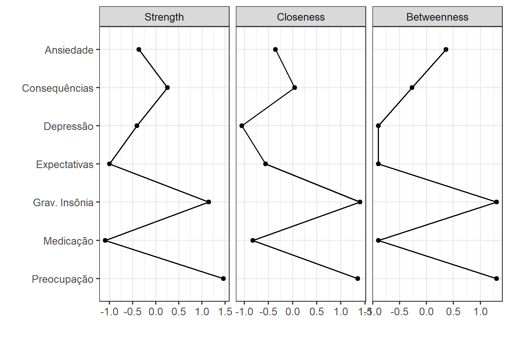

| Unique (#) | Missing (%) | Mean | SD | Min | Median | Max | ||
|---|---|---|---|---|---|---|---|---|
| D1 | 11 | 0 | 7.3 | 3.0 | 0.0 | 8.0 | 10.0 | ![]() |
| D2 | 11 | 0 | 6.5 | 3.5 | 0.0 | 8.0 | 10.0 | ![]() |
| D3 | 11 | 0 | 7.1 | 3.9 | 0.0 | 9.0 | 10.0 | ![]() |
| D4 | 11 | 0 | 6.6 | 3.9 | 0.0 | 8.0 | 10.0 | ![]() |
| D5 | 11 | 0 | 8.6 | 2.2 | 0.0 | 10.0 | 10.0 | ![]() |
| D6 | 11 | 0 | 5.6 | 3.9 | 0.0 | 6.0 | 10.0 | ![]() |
| D7 | 11 | 0 | 6.3 | 3.1 | 0.0 | 7.0 | 10.0 | ![]() |
| D8 | 11 | 0 | 5.5 | 3.5 | 0.0 | 6.0 | 10.0 | ![]() |
| D9 | 11 | 0 | 6.1 | 3.0 | 0.0 | 6.0 | 10.0 | ![]() |
| D10 | 11 | 0 | 6.6 | 3.6 | 0.0 | 8.0 | 10.0 | ![]() |
| D11 | 11 | 0 | 6.3 | 3.2 | 0.0 | 7.0 | 10.0 | ![]() |
| D12 | 11 | 0 | 7.1 | 2.8 | 0.0 | 8.0 | 10.0 | ![]() |
| D13 | 11 | 0 | 6.1 | 3.4 | 0.0 | 7.0 | 10.0 | ![]() |
| D14 | 11 | 0 | 5.3 | 3.8 | 0.0 | 6.0 | 10.0 | ![]() |
| D15 | 11 | 0 | 3.3 | 3.6 | 0.0 | 2.0 | 10.0 | ![]() |
| D16 | 11 | 0 | 4.4 | 3.7 | 0.0 | 4.0 | 10.0 | ![]() |
A rede de crenças disfuncionais
sobre o sono:
uma reanálise estrutural
da DBAS-16
Orientação: Profa. Dra. Renatha El Rafihi Ferreira
Marwin M I B Carmo
Faculdade de Medicina da Universidade de São Paulo
2023
1 INTRODUÇÃO
1.1 O papel das crenças
Modelo cognitivo-comportamental de Morin. Fonte: Ong (2012)
1.2 Construtos e suas relações
Pessoas com insônia grave tendem a endossar mais fortemente crenças disfuncionais sobre o sono.
A gravidade da insônia, por sua vez, está associada à ansiedade e depressão.
Atribuições e expectativas irreais sobre o sono originam pensamentos geradores de ansiedade.
Individuos com altos níves de crenças disfuncionais estão mais vulneráveis à depressão em função do estilo de pensamento negativo.
1.3 Mensuração
A Dysfunctional Beliefs and Attitudes About Sleep Scale (DBAS) é uma das medidas mais antigas para avaliar crenças e atitudes relacionadas ao sono.
Desenvolvida em 30 itens, foi reduzida para uma versão de 16 itens, amplamente utilizada.
Os itens são respondidos em uma escala Likert de 11 pontos, de 0 (discordo fortemente) a 10 (concordo fortemente).
Apresenta uma estrutura de 4 fatores: (a) Consequências da insônia, (b) Preocupação com o sono (c) Expectativas sobre o sono e (d) Medicação.
Novos estudos sugerem diferentes configurações da escala (e.g., Castillo et al, 2023 e Clemente et al., 2023).
1.4 O presente estudo
1.4.1 Objetivos:
- criar uma adaptação brasileira da DBAS-16, analisando sua estrutura fatorial, confiabilidade e validade de construto usando modelagem de variáveis latentes;
- realizar uma análise exploratória usando a perspectiva da psicometria de redes.
2 MÉTODO
2.1 Delineamento e configuração do estudo
O estudo foi aprovado pelo comitê de ética em pesquisa do Hospital das Clínicas da Faculdade de Medicina da Universidade de São Paulo (HC-FMUSP), São Paulo, Brasil (CAAE: 46284821.1.0000.0068).
Os participantes incluídos assinaram um termo de consentimento.
A coleta e o armazenamento de dados feitos com o REDCap.
Para testar a estabilidade temporal, os participantes foram solicitados a completar as mesmas medidas 14 dias depois.
O teste de not-close-fit (RMSEA < 0,05) indicou 924 participantes.
2.2 Participantes
Os critérios de inclusão foram idade entre 18 e 59 anos e não possuir dificuldades de leitura ou escrita em português.
Os maus dormidores foram categorizados com base nas dificuldades para adormecer ou permanecer dormindo, segundo o DSM-V e pontuação no Índice de Gravidade da Insônia maior do que sete.
A amostra final foi composta por 1389 participantes.
- 80,8% mulheres
- 73,5% com sintomas de insônia
- \(M_{idade}\) = 38,4 anos (dp = 9,8)
- 71,8% brancos
- 77,7% com diploma universitário
- 78,0% empregados
2.3 Materiais
2.3.1 Escala de Crenças e Atitudes Disfuncionais sobre o Sono (DBAS-16)
Os itens e instrução do teste foram traduzidos do inglês para o português por três tradutores independentes. Dois eram profissionais do sono e o terceiro, professor de inglês.
Um comitê de especialistas formado por profissionais especializados em insônia sintetizou as três traduções em uma única versão.
Dois tradutores nativos em inglês realizaram as retro-traduções, que foram novamente sintetizadas pelo mesmo comitê. A versão retro-traduzida foi enviada para apreciação dos autores do instrumento.
O instrumento foi submetido a um estudo piloto no formato de entrevistas cognitivas com 15 participantes: 12 mulheres e média de idade de 43 anos.

Fluxograma da adaptação transcultural. Adaptado de Borsa et al. (2012) e Beaton et al. (2000).
2.3.2 Índice de Gravidade da Insônia (ISI)
Avalia a gravidade da insônia e seu impacto na vida de uma pessoa com 7 itens. A escala varia de 0 (sem problemas) a 4 (problema muito grave). Uma Análise Fatorial Confirmatória (AFC) do modelo unifatorial produziu um ajuste aceitável: \(\chi^2\) (14) = 342,35, p < 0,001, RMSEA = 0,128 IC 90% [0,117; 0,140], CFI = 0,996, SRMR = 0,047, e bom nível de consistência interna: \(\omega_h\) = 0,942 [0,937; 0,947].
2.3.3 Escala Hospitalar de Ansiedade e Depressão (HADS)
Avalia o distresse psicológico em pacientes não-psiquiátricos por meio de dois fatores: Ansiedade e Depressão. A pontuação varia de 0 a 21 para cada fator. Um modelo de dois fatores produziu excelentes índices de ajuste: \(\chi^2\) (76) = 572,01, p < 0,001, RMSEA = 0,068 IC 90% [0,063; 0,073], CFI = 0,993, SRMR = 0,047, e boa consistência interna para os dois fatores: \(\omega_{h-depressão}\) = 0,876 [0,866; 0,886], \(\omega_{h-ansiedade}\) = 0,884 [0,874; 0,892].
2.4 Plano de análise
2.4.1 Estatísticas descritivas
Avaliação da variação dos itens e sua distribuição.
Correlação inter-item.
Avaliação da presença de outliers multivariados pela distância de Mahalanobis e distância de Cook generalizada (gCD), para identificar padrões de resposta fora do comum.
2.4.2 Evidências de validade estrutural
Análise Fatorial Confirmatória (AFC) replicando o modelo teórico original, estimada com MLMV.
O ajuste do modelo foi avaliado por meio dos índices: qui-quadrado \((\chi^2)\); Comparative Fit Index (CFI); Root Mean Square Error of Approximation (RMSEA); and Standardized Root Mean Squared Residual (SRMR).
Pontos de corte sugeridos por Dynamic Fit Index (DFI).
Análise Fatorial Confirmatória Multi-grupo (ACFMG) para investigar a invariância de medida entre grupos com e sem sintomas de insônia e em um intervalo de 14 dias. Foram testadas:
- Invariância configural (estrutural fatorial);
- Invariância métrica (cargas fatoriais);
- Invariância escalar (interceptos);
- Invariância estrita (variâncias residuais)
2.4.3 Consistência interna e validade convergente
Consistência interna avaliada com o \(\omega_h\) de McDonald.
Validade convergente avaliada pelas correlações entre as variáveis latentes em um modelo de equações estruturais (SEM).
A associação entre crenças sobre o sono, gravidade da insônia e depressão e ansiedade também foram exploradas em um modelo de rede.
2.4.4 Psicometria de redes
A amostra foi dividida em duas partes iguais as análises ocorreram em etapas de derivação e confirmação.
Análise de redundância com Unique Variable Analysis (UVA): identifica pares de variáveis localmente dependentes. Critério de wTO > 0,25.
Análise de dimensionalidade com Exploratory Graph Analysis (EGA): emprega modelos de rede não direcionados para determinar o número de dimensões em dados multivariados. Apresenta maior acurácia para estimar corretamente o número de fatores, e menor erro de viés médio, em estudos de simulação, comparado a métodos tradicionais (e.g., Análise Paralela, Scree plot, etc.).
2.5 Análise de invariância configuracional e métrica entre grupos de bons e maus dormidores usando a EGA.
- As redes foram estimadas com GLASSO e TMFG, utilizando o algoritmo Walktrap para detecção de comunidades.
- Foi observado o valor de TEFI.vn para verificar o modelo com menor entropia.
- A unidimensionalidade foi avaliada com o algoritmo Leading Eigenvalue.
- A medida de consistência estrutural foi obtida pela Bootstrap Exploratory Graph Analysis (bootEGA).
3 RESULTADOS
3.1 Varredura dos dados

3.2 Análise Fatorial Confirmatória
A estrutura de quatro fatores se ajustou melhor aos dados do que o modelo com um fator de segunda ordem: \(\Delta\chi^2\)(2) = 269,1, p < 0,001, \(\Delta\)AIC = -296,86, \(\Delta\)BIC = -286,4, 0,001, \(\Delta\)AIC = -296,86, \(\Delta\)BIC = -286,4.
Os índices de ajuste do modelo de quatro fatores foram insatisfatórios tanto em comparação com os índices tradicionais quanto com os produzidos por DFI: \(\chi^2\) (98, 1385) = 974,41, RMSEA = 0,094 90% CI [0,089; 0,100], CFI = 0,891, SRMR = 0,074.
3.3 Permitindo a correlação dos resíduos dos itens 3 e 4, e dos itens 6 e 15 foram obtidos índices de ajuste melhores: \(\chi^2\) (96, 1385) = 686,176, RMSEA = 0,077 90% CI [0,072; 0,083], CFI = 0,928, SRMR = 0,060.
Modelo fatorial da DBAS-16. MED=Medicação, WRY=Preocupação, CON=Consequências, EXP=Expectativas.
3.4 Invariância de medida
| Modelo | Δχ² | Δdf | p-value | ΔRMSEA | ΔCFI | ΔAIC | ΔBIC |
|---|---|---|---|---|---|---|---|
| Invariância longitudinal | |||||||
| Configural | 1430.4 | 416 | <.001 | .0607 | .9364 | 164747 | 165474 |
| Metric | 7.81 | 12 | .80 | -.0007 | -.0004 | -1 | -62 |
| Scalar | 39.76 | 12 | <.001 | .0005 | -.0029 | 65 | 5 |
| Strict | 91.84 | 16 | <.001 | .0024 | -.0081 | 208 | 127 |
| Invariância de grupo | |||||||
| Configural | 496.26 | 164 | <.001 | .0643 | .9211 | 96100 | 96654 |
| Metric | 57.43 | 11 | <.001 | .0042 | -.0168 | 91 | 34 |
3.5 Consistência interna e validade convergente
| Variável | 1 | 2 | 3 | 4 | \(\omega_h\) |
|---|---|---|---|---|---|
| 1. Consequências | 1,000 | 0,827 [0,811; 0,843] | |||
| 2. Preocupação | 0,693 | 1,000 | 0,882 [0,871; 0,893] | ||
| 3. Expectativas | 0,569 | 0,101 | 1.000 | 0,600 [0,557; 0,644] | |
| 4. Medicação | 0,704 | 0,994 | 0,126 | 1,000 | 0,752 [0,730; 0,771] |
| 5. ISI | 0,508 | 0,937 | -0,079 | 0,861 | 0,942 [0,937; 0,947] |
| 6. Depressão | 0,433 | 0,682 | 0,051 | 0,662 | 0,876 [0,866; 0,886] |
| 7. Ansiedade | 0,421 | 0,719 | 0,020 | 0,676 | 0,884 [0,874; 0,892] |

3.6 Psicometria de redes
3.6.1 Derivação da dimensionalidade com a amostra de treino.
Com base na sobreposição topológica ponderada (wTO), foram encontradas redundâncias entre os itens
- 1 (Preciso de 8 horas de sono) e 2 (Preciso compensar a perda de sono) (wTO = 0,257),
- 3 (Consequências da insônia na saúde) e 4 (Preocupado em perder o controle do sono) (wTO = 0,318),
- 6 (Melhor tomar remédios para dormir) e 15 (Medicação como solução) (wTO = 0,308).
3.6.2 Estimação da rede sem remover redundâncias
Antes de lidar com os itens redundantes, estimamos a dimensionalidade da DBAS-16 completa usando EGA.
Os métodos GLASSO e TMFG produziram duas e três comunidades, respectivamente.
A estrutura bidimensional do modelo GLASSO foi replicada com uma frequência de 56,6%. A solução TMFG retornou três dimensões em 48,6% das réplicas.
3.6.3 Estimação da rede sem o item 15
O item 15 foi removido com base em critérios quantitativos e melhor generalização semântica: maior wTO máximo para todos os outros itens (0,112 vs. 0,083), e menores valores de correlação item-total e variância.
Os dois modelos sugeriram três dimensões, mas com comunidades formadas por nós distintos.
Ambos tiveram baixa frequência de replicação: TMFG: 48,6% e GLASSO: 50,8%.
3.6.4 Estimação da rede sem os itens 15 e 3
O item 3 foi removido devido ao seu wTO máximo maior, e correlação item-total e variância inferiores.
O modelo GLASSO produziu três dimensões novamente, e o modelo TMFG produziu duas dimensões.
A replicação da dimensionalidade melhorou ligeiramente (TMFG: 69,8%; GLASSO: 64,1%)
3.6.5 Estimação da rede sem os itens 15, 3 e 1
Mantivemos o item 2 em vez do item 1 devido ao seu wTO máximo menor para todos os outros itens (respectivamente, 0,117 e 0,124) e maior variância.
Tanto TMFG quanto GLASSO produziram duas comunidades com agrupamento de nós idêntico, com taxas de replicação mais altas (TMFG: 87,1%; GLASSO: 73,8%).
A rede resultante com duas comunidades, sem os nós 1, 3 e 15, teve o TEFI.vn mais baixo (-7,73) e taxas de replicação mais altas (TMFG: 87,1%; GLASSO: 73,8%)
Dimensões
|
|||
|---|---|---|---|
| Modelo | 1 | 2 | 3 |
| Amostra de derivação (n = 693) | |||
| Instrumento completo | |||
| TMFG | .832 | .939 | .226 |
| GLASSO | .543 | .785 | . |
| Uma redundância (15) | |||
| TMFG | .888 | .909 | .240 |
| GLASSO | .910 | .755 | .546 |
| Duas redundâncias (15, 3) | |||
| TMFG | .168 | .844 | . |
| GLASSO | .588 | .949 | .693 |
| Três redundâncias (15, 3, 1) | |||
| TMFG | .342 | .810 | . |
| GLASSO | .661 | .863 | . |
| Confirmation sample (n = 692) | |||
| Três redundâncias (15, 3, 1) | |||
| TMFG | .646 | .848 | . |
| GLASSO | .843 | .960 | . |
| Full sample (n = 1385) | |||
| Três redundâncias (15, 3, 1) | |||
| GLASSO | .905 | .996 | . |
3.7 Análise da dimensionalidade com a amostra de confirmação
A UVA identificou os mesmos três pares de redundância.
A EGA foi executada com GLASSO e TMFG, removendo os itens 1, 3 e 15 simultaneamente.
Ambos os métodos retornaram duas dimensões e replicaram a atribuição de itens.
Os dois métodos tiveram taxas semelhantes de replicação (TMFG: 92,5%; GLASSO: 91,2%), mas consistência estrutural significativamente menor para o TMFG (Dimensão 1: 64,6% vs. 84,3%; Dimensão 2: 84,8% vs. 96%).
A modelagem da estrutura do modelo GLASSO em uma AFC resultou em índices de ajuste piores do que uma especificação de Nível 3 obtida por meio do DFI (SRMR = 0,051, RMSEA = 0,093, CFI = 0,938):
- \(\chi^2\) (64, N = 693) = 302,592, RMSEA = 0,089 IC 90% [0,079; 0,099], CFI = 0,919, SRMR = 0,063.
No entanto, a estrutura obtida por EGA forneceu um ajuste melhor aos dados do que o modelo teórico com quatro fatores:
- \(\Delta\chi^2\) (34) = 279,67, p < 0,001, \(\Delta\)AIC = -9802,82, \(\Delta\)BIC = -9852,77, \(\Delta\)RMSEA = 0,006, \(\Delta\)CFI = -0,022, \(\Delta\)SRMR = 0,012.
Ambas dimensões apresentaram níveis satisfatórios de consistência interna (\(\omega_{h1}\) = 0,84, \(\omega_{h2}\) = 0,85).
Utilizando a amostra completa, foi possível confirmar a estrutura bidimensional e as atribuições de itens obtidas com a amostra de derivação e de confirmação.
Essa estrutura foi replicada com sucesso em 93,1% das 1000 amostras bootstrap.
Essa estrutura demonstrou excelente estabilidade para a Dimensão 1 (90,5%) e Dimensão 2 (99,6%), com estabilidade dos itens variando de 0,9 a 1,0.
3.7.1 Invariância da estrutura de rede
Foram obtidas estruturas de comunidades não equivalentes para bons e maus dormidores.
A mediana do número de dimensões geradas foi igual a 2, recuperados em 67,8% das amostras bootstrap para bons dormidores e 53% para maus dormidores.
Apenas o item 10 (“O sono é imprevisível”) teve um desempenho de carga de rede significativamente diferente entre grupos.
4 DISCUSSÃO
A estrutura de quatro fatores teve índices de ajuste apenas aceitáveis por índices de ajuste tradicionais e dinâmicos.
As subescalas “Preocupação com o sono”e “Consequências”apresentaram alta consistência interna, enquanto as subescalas “Expectativas”e “Medicação”apresentaram valores modestos.
A ideia de que os 16 itens que avaliam crenças e atitudes disfuncionais sobre o sono se conformam a uma estrutura de quatro fatores é questionável.
Estes resultados são congruentes com análises confirmatórias da DBAS-16 e contribuem como a primeira análise com uma grande amostra clínica (>1000).
A estrutura do modelo e as cargas fatoriais permaneceram consistentes ao longo de 14 dias, sem que houvesse mudança no status de insônia.
As cargas fatoriais dos itens nos fatores variaram entre os grupos.
A melhora nos sintomas da insônia pode alterar a forma como os itens da DBAS-16 são interpretados.
É necessário testar a invariância de medida em estudos de intervenção, pois uma possível diminuição nas crenças disfuncionais sobre o sono pode se dar pela diferença no comportamento dos itens.
Os fatores da DBAS-16 apresentaram correlações positivas moderadas a fortes com a gravidade da insônia, ansiedade e depressão.
Uma rede estatística revelou a centralidade do nó “Preocupação” e a correlação parcial negativa entre as expectativas de sono e a gravidade da insônia.
As crenças de expectativas por serem comuns a bons dormidores e podem não ser bons indicadores de problemas de sono
A EGA revelou que duas dimensões refletem com precisão a estrutura subjacente de crenças e atitudes disfuncionais em relação ao sono.
A Dimensão 1 (“Consequências da insônia”) é composta de nós do fator original “Consequências da insônia”(itens 5, 7, 9, 12 e 16), junto com o item 2 (“Quando não durmo o suficiente à noite, preciso recuperar o sono no dia seguinte com um cochilo ou dormindo mais na próxima noite.”) do fator “Medicação”, e o item 8 (“Quando durmo mal uma noite, sei que irá atrapalhar meu sono pelo resto da semana.”) do fator “Preocupação com o sono”.
A Dimensão 2 (“Preocupação com o sono”) é composta dos itens restantes da subescala “Preocupação com o sono”(itens 4, 10, 11 e 14) e do item 6 (“Para estar alerta e funcionar bem durante o dia, eu acredito que seria melhor tomar um remédio para dormir do que ter uma noite de sono ruim.”) e 13 (“Acredito que a insônia seja essencialmente o resultado de um desequilíbrio do meu organismo.”) do fator “Medicação”.
A estrutura da rede não foi invariante para bons e maus dormidores, diferente do observado ao testar a invariância do modelo teórico com AFCMG.
O item 10 (“Não consigo prever se vou ter uma noite de sono boa ou ruim.”) foi o único não invariante em relação às cargas de rede.
Estudos anteriores verificaram que o item 10 distingue efetivamente bons e maus dormidores (Clemente et al., 2023).
4.1 Limitações
A EGA é uma técnica recém desenvolvida. A escolha de um algoritmo diferente pode modificar os resultados encontrados.
Os participantes com problemas de sono buscavam tratamento, indicando a possibilidade de insônia mais grave.
Desequilíbrio na proporção de bons e maus dormidores.
Os questionários foram aplicados online com respostas obrigatórias.
Restrição de idade entre 18 e 59 anos.
A maioria da amostra era de mulheres, brancos e pessoas com diploma universitário.
Características culturais específicas à amostra brasileira podem ter influenciado os resultados.
A mesma amostra total foi utilizada para derivação e confirmação.
Estes achados replicados usando uma amostra maior, mais diversa em termos de etnia, sexo, idade, escolaridade, localização geográfica, e mais equilibrada entre bons e maus dormidores.
Pesquisas futuras devem testar a invariância longitudinal por pelo menos oito semanas para refletir a duração típica de protocolos de tratamento cognitivo-comportamental para insônia.
5 CONCLUSÃO
A DBAS-16 é um instrumento adequada para uma população de falantes de português brasileiro.
Uma estrutura de duas dimensões pode ser uma representação melhor das crenças e atitudes disfuncionais sobre o sono.
A remoção de itens redundantes resultou em uma estrutura mais estável.
Estes resultados podem ajudar clínicos e pesquisadores a obter uma melhor compreensão de como as crenças e atitudes disfuncionais sobre o sono são organizadas.
Os resultados desta pesquisa fornecem direcionamentos sobre as crenças que podem ser mais ou menos significativas para a compreensão do construto.
Obrigado!